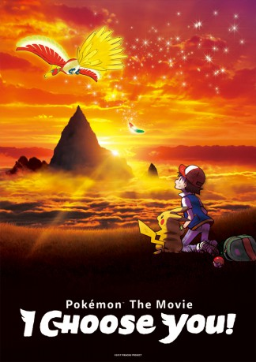

#9425 Pokémon 20 - Du bist dran!
Alternativ: Pokemon the Movie: I Choose You! (Englischer Titel)
 
 IMDB-Wertung: 6.5 / 10
IMDB-Wertung: 6.5 / 10  Metascore: 0
Metascore: 0 
Ash Ketchum, a kid from Pallet Town, embarks on a journey across the Kanto region to become a Pokemon Master. With his partner Pikachu, who at first hated Ash. But the bond of Pikachu and Ash builds as they travel to beat gyms and enter the league of Kanto.
Jahr: 2017
Dauer: 96 Minuten
FSK: 6
Land: Japan Studio: PolybandTonspuren: DTS-HD - ,
Untertitel:
Auflösung: 1080p (1920x1080) Größe: 8407 MB
Genre: Action, Abenteuer, Fantasy, Animation/Trick, Familie
Regisseur: Kunihiko Yuyama
Drehbuch: Takeshi Shudo, Satoshi Tajiri, Shôji Yonemura
Soundtrack: Shinji Miyazaki
Darsteller:
Datei: X:\Kinder Anime\Pokémon\Pokémon 20 - Du bist dran! (2017, FSK6, 1920x1080).mkv seit 30.08.2018
Festplatte: Kinder-Filme+Trick
 Es gibt insgesamt 23 Filme in der Gruppe 'Kinder Anime\Pokémon'
Es gibt insgesamt 23 Filme in der Gruppe 'Kinder Anime\Pokémon'